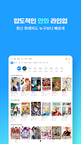

我用了一周 Ridibooks，终于把韩语电子阅读的痛点一次性解决了
从排版自由度到跨设备同步，从全文搜索到躺着也能读的自动滚动，Ridibooks 这款韩国数字阅读平台的细节做得比想象中扎实。
说实话，装 Ridibooks 的初衷很简单——我想学韩语，找了几本原版小说，想在手机上能方便地看。之前用过几个阅读器，要么排版锁死调不了，要么字体选不了韩语专用的，要么跨设备同步跟抽风似的。抱着试试看的心态搜了一圈，Ridibooks 被推到了最前面。
它的官网上写着自己是韩国本土最大的数字阅读平台之一，号称电子书、网络小说、漫画 PDF 什么都能装。我没抱太高期望，反正同类产品试过好几个了，差别无非就是界面好看点或者多几个设置开关。结果这一周用下来，有些细节确实超出预期。
第一眼：界面韩语，但上手没障碍
从官方下载装完打开，默认界面是韩语的。说实话我一开始有点怵——之前用纯韩文 App 总会卡壳在某个看不懂的设置项上。但 Ridibooks 的界面结构挺清晰的，底部几个标签栏（书架、分类、我的）跟常见的阅读 App 布局差不多，连蒙带猜基本能点明白。
阅读器打开之后第一眼让我有点意外——默认的排版留白很舒服，没有密密麻麻堆在屏幕上那种压迫感。然后我就开始调设置了，这一调就发现了第一个惊喜。
排版自由度是真的高，而且每本书可以单独存
我见过不少阅读器，字号和行距能调，但段落宽度是锁死的——要么铺满屏幕要么固定窄栏，没有中间选项。Ridibooks 不一样，它有个「段落宽度」的滑块，从窄到宽随便拉。韩语句子长，之前看原版小说一行堆得满满当当，脖子左右转得酸。调到 75% 左右之后，每行短了一截，读长句居然不费劲了。

然后发现还有个更狠的：用户可以自己上传字体文件。我之前找了一套带元音辅音分离显示的韩语学习字体，试着传了一下，几秒钟就好了。之后打开阅读器设置，选那个字体就能用。说实话这个功能在主流阅读器里我几乎没见过，更不用说专门给韩语学习者设计的场景。
还有个细节我挺在意的——它的排版设置是按作品保存的，不是全局统一。之前用的某阅读器，在某本书里把行距调宽，结果另一本我想紧凑排版的也跟着变宽了。Ridibooks 每本书单独记一套偏好，网络小说我调宽松点慢慢看，技术类电子书我调紧凑点快速扫，互不干扰。
全文搜索：韩语分词匹配逻辑比我想的聪明
学韩语的人都懂这个痛点：一个动词有十来种变形，搜完整词形经常找不到，搜词干又怕命中太多不相关的。我抱着试试的心态搜了一个常见语法点，比如 "-아서" 这个连接词尾，结果搜索结果把所有带这个词尾的句子都列出来了——不是只搜完全匹配的那一种形态。
然后我又搜了一个单词的词干部分，看看能不能覆盖更多变形。结果确实能搜到，但建议还是尽量输入完整词形，不然命中量太大要自己筛。这个搜索是完全本地运行的，不会把关键词上传服务器，这一点对有些敏感内容的书来说挺友好。

还有个 PDF 的坑要说一下：扫描版 PDF（就是整页一张图片那种）是没有文本层的，全文搜索用不了。这个是所有阅读器的通病，但值得提一句——如果你下的 PDF 是扫描版，要么换有文本层的，要么用 PC 阅读器自带的 OCR 功能转一下。
同步：踩过的坑挺多，但找对方法就稳了
刚用那两天最烦的就是同步。手机上读到第三章，打开 PC 版还是停在第一章。后来才发现原因挺蠢的——我手机用 Kakao 登录，PC 用邮箱注册，虽然绑定的是同一个邮箱地址，但在 Ridibooks 看来这是两个完全不同的账号身份。改成统一用邮箱登录之后，同步就正常了。
还有几个同步开关要手动确认打开：已读页自动同步、阅读笔记自动同步、下载历史记录同步。移动端默认不是全开的，进设置里手动拨一下就好。PC 端倒是默认全开启。
如果同步还是不对，排查顺序大概是这样：先确认账号身份是不是同一个登录方式，然后检查三个同步开关，再看看网络（弱信号下可能延迟 30 分钟以上），再不行就更 App 版本。订阅用户的话还要注意，Ridi Select 最多支持 5 台设备，超过了就要先在设置里把旧设备移除。这些排查步骤我后来去Ridibooks文档翻了一下，发现还有更系统的八种情况分阶段处理。
自动滚动：躺着也能读，还能配 TTS
这个功能我之前在有声阅读器上见过，但在电子阅读器里带自动滚动的不多。设置好速度之后页面就自己往上滚，不想伸手触屏的时候特别方便。我晚上躺床上看网络小说，开自动滚动配合 TTS 朗读，速度调到比朗读稍慢一点，眼睛跟着文字高亮慢慢走，相当于同时练听力和阅读。
滚动速度有好几档可调，电子书精读我调慢一点，网络小说速读就调快。屏幕一点击会暂停，再点恢复，逻辑简单但够用。唯一的问题是 PDF 阅读器不支持自动滚动，只能在电子书和网络小说里用。
总结：适合谁，不适合谁
如果你是韩语学习者、喜欢看韩国原版内容、或者需要一个排版自由度够高的跨设备阅读器，Ridibooks 值得装。它的文本排版控制是真的细，用户字体上传这个功能在同类里基本是独一份，而且按作品保存设置这点细节做得很到位。
但如果你主要看中文内容，或者只需要一个简单的阅读器能开 PDF 就行，那可能用不上它这些特性。界面纯韩语虽然能蒙着用，但心理上还是有点门槛。另外同步问题第一次碰的时候挺抓狂的，尤其是 Kakao/Naver/Apple ID 这些第三方登录方式和邮箱注册在系统里是独立身份这一点，很容易踩坑。
总体来说，用了一周下来感觉这软件没什么花哨的噱头，就是把"让你舒服地读完一本书"这件事做细了。排版、搜索、同步、自动滚动——每个功能单独拎出来看都不是惊天动地的创新，但放在一起，就是一套真正考虑到真实阅读场景的体验。对于想学韩语或者习惯韩国数字内容生态的人来说，这一套下来确实省心不少。
想装的话直接去就行，我自己这几天基本上每天都在用，暂时没发现什么硬伤。如果之后用的时间长了碰到什么新情况，再回来补。
另外这套软件相关的资料我同步维护在三个代码仓库里，想 Star 或者 Pull 都方便：GitHub、Gitee、GitCode，国内访问的话后两个更顺手一些。